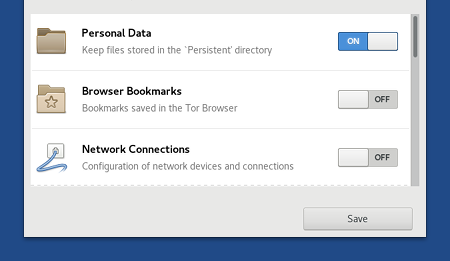

Tails 3.9 est la plus grosse mise à jour de Tails cette année !
Elle inclue deux nouvelles fonctionnalités sur lesquelles nous avons travaillé depuis plus d'un an :
- Logiciels additionnels
- Intégration de VeraCrypt
Cette version corrige également plusieurs failles de sécurité et la mise à jour doit être faite dès que possible.
Changements
Nouvelles fonctionnalités
Logiciels additionnels
Vous pouvez maintenant installer automatiquement des logiciels additionnels lors du démarrage de Tails.
Lors de l'installation d'un paquet additionnel Debian dans Tails, vous pouvez décider de l'installer automatiquement à chaque fois :

Pour vérifier la liste des paquets logiciels additionnels, choisissez Applications ▸ Outils système ▸ Additional Software.

La sécurité des paquets inclus dans Tails est soigneusement testée. Installer des paquets supplémentaires peut mettre en péril la sécurité de votre Tails, donc faites attention à ce que vous installez.
Lire notre documentation sur l'installation de logiciels additionnels.
Intégration de VeraCrypt
Pour déverrouiller un volume VeraCrypt dans Tails, choisissez Applications ▸ Utilitaires ▸ Unlock VeraCrypt Volumes.

L'intégration de VeraCrypt dans les utilitaires Fichiers et Disques a été faite en amont dans GNOME et seront disponibles en dehors de Tails dans Debian 10 (Buster) et Ubuntu 18.10 (Cosmic Cuttlefish).
Lire notre documentation sur l'utilisation de volumes VeraCrypt.
Lecteur de nouvelles dans Thunderbird
Thunderbird est maintenant le lecteur officiel des flux RSS et Atom dans Tails.
Liferea sera retiré de Tails dans le version 3.12, début 2019.
Mises à jour et changements
Amélioration de la configuration du stockage persistant pour qu'il soit plus facile à faire défiler et plus conforme aux règles de GNOME.

Logiciels inclus
Mise à jour du Navigateur Tor vers la version 8.0, basée sur Firefox 60 ESR.
Basé sur Firefox Quantum.
Nouvelle vue du circuit Tor

Mise à jour de Thunderbird de la version 52 vers la version 60.
Mise à jour de Tor vers la version 0.3.4.7-rc.
Mise à jour d'Electrum de la version 3.0.6 vers la version 3.1.3.
Support matériel
Les mises à jour suivantes permettent à Tails de mieux fonctionner sur du matériel récent (graphiques, Wifi, etc.) :
Mise à jour de Linux vers la version 4.17 qui corrige aussi l'attaque Foreshadow.
Mise à jour des bibliothèques DRM et Mesa pour améliorer la compatibilité avec certaines cartes graphiques.
Mise à jour des microcodes Intel et AMD et la plupart des paquets de microprogrammes.
Problèmes corrigés
Arrêt de l'affichage de l'assistant de configuration d'Enigmail à chaque fois que Tails est redémarré. (#15693 et #15746)
Affichage d'un sablier lors du démarrage du Navigateur Tor, de la Documentation de Tails et de WhisperBack. (#15101)
Utilise à nouveau le Navigateur Tor pour consulter la documentation hors ligne. (#15720)
Affiche Synaptic et Terminal administrateur même lorsque aucun mot de passe d'administration n'a été défini. (#11013)
Installeur de Tails
Pour plus de détails, lisez notre liste des changements.
Problèmes connus
- Démarrer Tails 3.9 depuis un DVD est deux fois plus lent qu'avec les versions précédentes. (#15915)
Voir la liste des problèmes connus de longue date.
Obtenir Tails 3.9
Pour l'installer, suivez nos instructions d'installation.
Pour mettre à jour, des mises à jour automatiques sont disponibles depuis les versions 3.7.1, 3.8, et 3.9~rc1 vers la version 3.9.
Si vous ne pouvez pas faire une mise à jour automatique ou si le démarrage échoue après une mise à jour automatique, merci d'essayer de faire une mise à jour manuelle.
Et ensuite ?
Tails 3.10 est prévu pour le 23 octobre.
Jetez un œil à notre feuille de route pour savoir ce que nous avons en tête.
Nous avons besoin de votre aide et il y a de nombreuses manières de contribuer à Tails (faire un don est seulement l'une d'entre elles). Venez discuter avec nous !